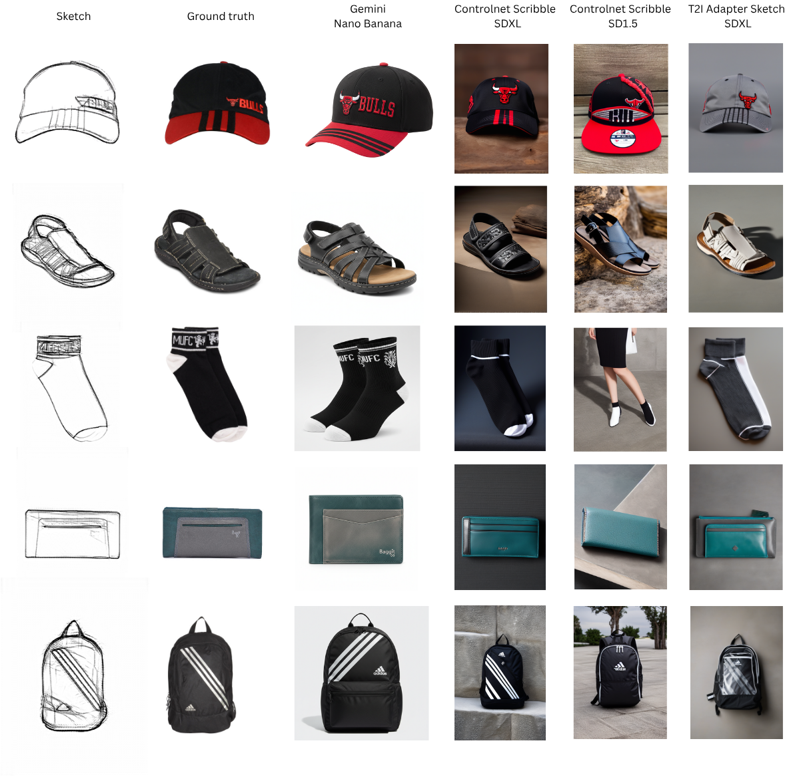

ICCCI 2026
GarmentSketch: Large-scale Sketch-to-Fashion Benchmark
1University of Science, Ho Chi Minh, Vietnam
2Vietnam National University, Ho Chi Minh, Vietnam
3University of Dayton, Ohio, United States
*Corresponding author
Abstract
Fashion sketching is a cornerstone of design workflows, allowing rapid visualization of creative concepts prior to physical prototyping. Yet, progress in sketch-based fashion image synthesis has been hindered by the absence of large-scale, high-quality paired resources. To bridge this gap, we present GarmentSketch, a novel dataset comprising over 26,275 fashion sketches across 21 garment categories, each paired with detailed textual descriptions. Captions were produced through a multi-stage pipeline that integrates multiple multimodal large language models (MLLMs) with human-in-the-loop refinement, ensuring both semantic accuracy and descriptive richness. We benchmark GarmentSketch on state-of-the-art generative models, providing baseline performance for sketch-guided text-to-image generation. Our experiments reveal both the promise and the current limitations of existing methods. By offering a comprehensive and richly annotated resource, GarmentSketch establishes a foundation for advancing sketch understanding, fine-grained fashion image generation, and creative human-AI collaboration in design.
Benchmark Overview

Dataset Samples

Contributions
- A data-curation pipeline that combines multiple LLMs with human-in-the-loop verification to produce high-quality, semantically rich fashion sketch descriptions.
- GarmentSketch, a large-scale dataset of 26,275 sketch-caption pairs spanning 21 garment categories.
- Comprehensive benchmarks across state-of-the-art multimodal image generation models, with baseline performance and key limitations.
BibTeX
@inproceedings{bui2026garmentsketch,
title={GarmentSketch: Large-scale Sketch-to-Fashion Benchmark},
author={Bui, Duong-Duy-Khang and Pham, Minh-Tan and Nguyen, Tam V. and Tran, Minh-Triet and Le, Trung-Nghia},
booktitle={ICCCI},
year={2026},
url={https://khangbdd.github.io/garmentsketch/}
}